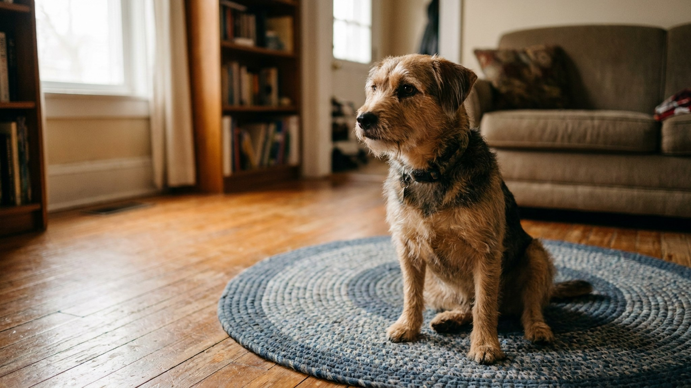

Собака бросается на гостей, мешает во время еды или не может успокоиться в кафе с верандой — всё это решает один навык. Коврик-якорь, или «место», — не просто команда «лечь там». Это состояние расслабленного спокойствия, привязанное к конкретному предмету. Научить можно любую собаку за 5 коротких сессий — без крика, без принуждения.
🐾 Экономьте на лишних визитах к врачу
Сначала спросите AI-ветеринара в AnimaLife — часто этого достаточно, чтобы понять, нужен ли визит к врачу.
Обычная команда «лежать» — позиция тела. Коврик-якорь — другое: это поведенческий паттерн, в котором собака идёт на конкретный предмет и остаётся там в расслабленном состоянии до команды «свободно». Разница принципиальная.
Коврик становится для собаки «своим местом» — предсказуемой, безопасной точкой, где от неё ничего не требуют, кроме спокойного присутствия. Хорошо обученная собака воспринимает команду «на место» не как ограничение, а как сигнал расслабиться.
Практическое применение огромное:
Маркер — сигнал, который точно сообщает собаке: «вот это действие принесло тебе награду». Лучший маркер — кликер. Если его нет — короткое слово «да» или «есть», произносимое всегда одинаково (не «дааа» и не «хорошо»).
Почему маркер важен: между правильным действием и угощением всегда есть задержка. Без маркера собака не понимает, за что именно её наградили — за то, что легла, или за то, что посмотрела в сторону? Маркер убирает эту неопределённость.
Угощение для тренировки «места» должно быть по-настоящему ценным: мясо, сыр, курица. Обычный сухой корм работает хуже — расслабленное лежание требует высокой мотивации, особенно на первых этапах.
Положите коврик на пол. Ничего не говорите. Просто ждите. Как только собака понюхает коврик или поставит на него лапу — немедленно маркер и угощение. Цель этой сессии: собака понимает, что коврик = хорошо, когда ты на нём.
Не тяните собаку на коврик, не кладите угощение на него заранее. Пусть она придёт сама и обнаружит связь между «быть на коврике» и «получать вкусное».
Теперь маркируйте только тогда, когда все четыре лапы на коврике. Постепенно собака начнёт ложиться — либо сама, либо вы можете аккуратно использовать жест (лакомство ко лбу вниз). Как только легла — маркер и несколько угощений подряд («джекпот»). Это даёт понять: лечь на коврик — особенно выгодно.
Теперь добавляем команду. Когда собака направляется к коврику — скажите «место» (или «коврик» — слово не важно, важна стабильность). После того как легла, подождите 3–5 секунд перед маркером. Затем 10 секунд. Затем 20. Увеличивайте паузы постепенно, не резко.
Если собака встаёт — не ругайте. Просто молча покажите на коврик и начните снова с более короткой паузы. Ошибки — это информация, а не непослушание.
Собака лежит на коврике — отступите на шаг. Потом на два. Потом выйдите за дверь на 5 секунд. Цель: собака остаётся на месте, даже когда вас нет рядом.
Параллельно добавляйте мягкие отвлекающие факторы: поднимите руку, пройдите мимо, бросьте мяч в другой конец комнаты. Если собака выдерживает — маркер и щедрое угощение. Если срывается — снизьте сложность.
Попросите кого-то войти в комнату, позвоните в дверной звонок, включите шумную музыку. Команда «место» до прихода гостей — собака идёт на коврик. Гости заходят — собака остаётся. Только после вашего «свободно» она может выйти.
Первые несколько раз гости вообще игнорируют собаку и не подходят к ней — так легче держаться на месте. Постепенно усложняйте: гости здороваются, но только когда собака спокойна на коврике.
🐾 Всё о вашем питомце — в одном приложении
AI-ветеринар, дневник, напоминания о прививках и уходе. Установите AnimaLife — это бесплатно, в Telegram и MAX.
🐾 Понравился разбор?
Подпишитесь на канал — каждый день разбираем по одному тревожному симптому у кошек и собак: что в пределах нормы, а когда пора к врачу. Подпишитесь, чтобы не пропустить разбор, который может спасти здоровье вашего питомца.
Ценность «якорного» коврика — в его мобильности. Возьмите тот же коврик в кафе, к друзьям, в такси. Знакомый запах и ткань активируют уже выученный паттерн поведения. Собака в незнакомой среде быстрее успокаивается, когда у неё есть «своё место».
Рекомендации по коврику: нескользящее дно, средняя мягкость, размер чуть больше собаки. Слишком пышный матрас не очень — на нём сложнее занять устойчивое положение. Оптимальный вариант — тонкий нескользящий коврик из флиса или прорезиненный коврик для йоги.
Коврик-якорь — один из самых универсальных навыков в городской жизни с собакой. Пять сессий по 7–10 минут, и у вас есть инструмент, который работает дома, в гостях и в кафе.